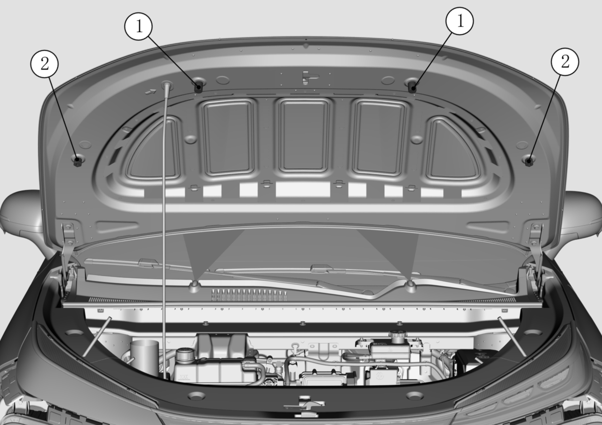

Поворачивать буферные подушки капота ①, ② для регулировки выступания резьбы буферных подушек; выступающая резьба: 2–4 витка; выполнить регулировку совпадения по высоте сварного узла капота по внешнему виду.

До завершения регулировки буферных подушек запрещается с усилием закрывать капот во избежание удара кромки капота о Комбинированная фара.
Если узел капота находится в закрытом состоянии и зазоры по всему периметру равномерны, нет вмятин или выпуклостей, а контуры выровнены, это означает, что узел капота отрегулирован правильно.
В процессе регулировки следует избегать повреждения лакокрасочного покрытия в зоне петель капота, при повреждении покрытия обязательно выполнить подкраску.